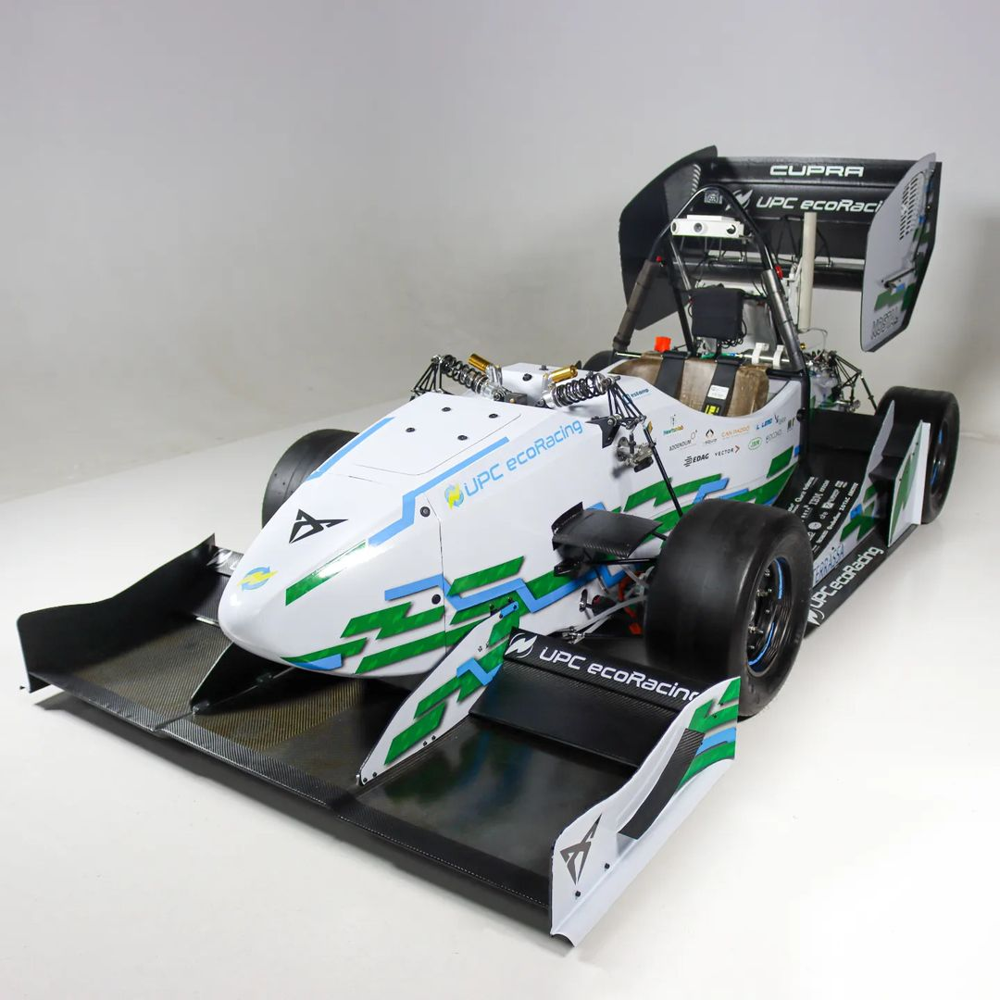

Robotics Perception · Formula Student
ecoRD 2021/22 — Driverless Perception
A camera-based perception system for UPC ecoRacing's second-generation autonomous car — the 2021/22 season.

Overview
For the 2021/22 season I designed the camera-based perception system of UPC ecoRacing's second-generation autonomous vehicle — a new car that built on the lessons of the first prototype.
The focus shifted towards a leaner, vision-centric pipeline: robust real-time cone detection and classification, improved camera calibration and a perception stack optimized for the dynamic events of the Formula Student competition.
Demo
The 2021/22 UPC ecoRacing driverless car reveal
Highlights
- Camera-based perception for the second-generation driverless car
- Real-time cone detection and color classification
- Refined camera calibration and dataset pipeline
- Optimized inference for the on-car embedded compute
Gallery
© Víctor Escribano García
← Back to all projects